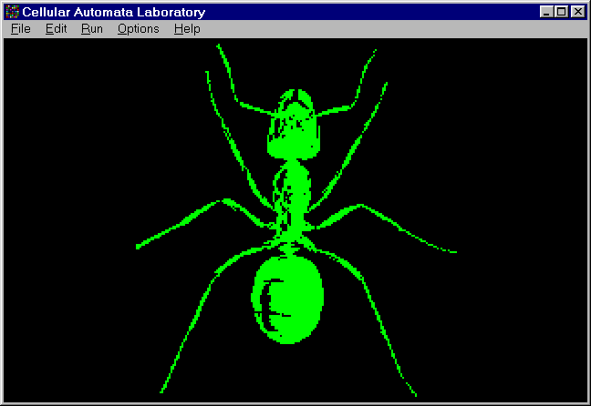

If you haven't watched JCdemo yet, please do so before reading any further (see Demo of JC). Watching JCdemo is like watching a series of selected short subjects at the movies, but what you see are not movies. In computer graphics terminology, a "movie" is a sequence of pictures which have been saved one by one in the computer memory, and then displayed in rapid succession--like a slideshow. But when you watch JCdemo you see a festival of one-act computer "plays," where a "play" is something that is happening right now in realtime inside your machine. Live action that you can reach into and alter.
Even to call our little vignettes "plays" is a bit misleading. Traditionally, a play has a script which specifies everything that will happen. But when you invent a cellular automaton rule you do not know, in any very detailed sense, what is going to happen at all. The demos may be plays, but they do not have scripts. No, the way we specify a demo is simply by describing i) Cast, ii) Scenery, and iii) Lighting.
How many situations can EveryCell distinguish? EveryCell has 8 bits of personal state (memories, predilections, outside noise), and EveryCell can see one bit of each of his/her eight neighbors. So an EveryCell situation consists of 16 bits: 8 bits of personal state and 8 bits of neighborhood information. Each bit can be either 0 or 1, so this means that there are 216 = (26) × (210}) = 64K situations. (Never forget that 210 is around a thousand--1024 exactly, but close enough to a thousand to be called "K" for "kilo".)
So I can specify EveryCell's personality in wrackingly omniscient
detail by listing a long table which gives the value of a variable we
call "JCRule" as a function of EveryCell's personal eight-bit
"OldState" and of the eight neighborhood bits--one bit from each
neighbor--which EveryCell can see. Why can't EveryCell see all eight
bits of each neighbor? Hey, dude, get real. How much do you know about
your neighbors?

So a .JC lookup table can be thought of as having 64K lines something like the following:
| OldState | NW | N | NE | E | SE | S | SW | W | JCRule |
|---|---|---|---|---|---|---|---|---|---|
| 00000000 | 0 | 0 | 0 | 0 | 0 | 0 | 0 | 0 | 00000000 |
| . . . | |||||||||
| 00000000 | 0 | 0 | 0 | 0 | 0 | 1 | 1 | 1 | 00000001 |
| . . . | |||||||||
| 10000010 | 1 | 0 | 0 | 1 | 0 | 1 | 0 | 1 | 10000111 |
| . . . | |||||||||
| 11111111 | 1 | 1 | 1 | 1 | 1 | 1 | 1 | 1 | 00001111 |
As the index lines are always the same, all that the .JC table really needs to store are the JCRule values; so a .JC ruletable file codes up 64K bytes. In practice, JC uses a compression scheme, so that most of the .JC tables are substantially smaller than 64K. A simple rule like Brain has a table that compresses down to 648 bytes; a rule like FredMem which keeps track of EveryCell's last seven states takes 33,792 bytes.
If you press the L key and then press Enter you will see a list of the available .JC ruletables in the current directory. If you want to find out how many bytes the various .JC ruletables occupy press Q twice to exit JC, and then enter "dir *.jc" at the DOS prompt.

JC comes with a diverse selection of start patterns that you can load directly. You can also create your own customized start patterns by a) drawing them with the JC screen editor, b) letting them evolve, or c) importing them from AutoCAD or AutoSketch® . Pressing the E key from the main menu gets you into the screen editor; we'll say more about its functions below. Option (b), of simply saving an attractive screen as a start pattern, is used to show off the JC Rug rule in JCdemo. Once you have a pattern you want on screen, you save it by pressing Ctrl-F4. When you do this, a pattern file is created with extension .JCP (For JC Pattern). The technique of importing detailed drawings from AutoCAD or AutoSketch is discussed below.
The JC screen consists of 320×200 pixels, with one byte (eight bits) of state information per pixel, so a .JCP file codes up 64,000 bytes of information (about the same amount as a 64K .JC ruletable). JC uses data compression to reduce the size of the files where possible; FaderEgg.JCP needs only 23 bytes and Tim.JCP takes 23,457.
If you press the P key and then press Enter, you will see a list of the available .JCP files in your current directory. To find out how big the files are, leave JC by pressing Q twice, and then enter "dir *.jcp" at the DOS prompt.
Aside from the pattern part of the "scenery," JC also lets you set the topology. In particular, you can turn screenwrap on and off. In wrap mode, a pattern which moves off the screen's right will come back on the screen's left. The JC menus refer to wrap mode as "torus screen" because a torus is a doughnut shape, and if you were to actually paste the screen's left side to its right side and its top side to its bottom side you would get an inner-tube torus shape. The JC menus call the nowrap mode "open" or "plane" screen because when there is no wrap and the edges are set to zero, it is as if the screen is a patch in an endless surrounding plane of blank cells. There are also some one dimensional topologies, where the "torus" and "plane" become the "ring" and the "line."
EveryCell can have any state value from 0 to 255, and you can select
any color you like for each of the 256 states. On CGA and EGA
machines, of course, there are only four colors to choose from, but on
VGA machines you can select from some quarter
million different colors for your colorpalette.

JC has colorpalette files with extension .JCC (for JC Color). You can create a colorpalette by using Alt-F9 to change individual state colors, and then using Ctrl-F5 to save the colorpalette. More commonly, you use a word processor to look into and edit a .JCC file. Typically you copy an existing ASCII .JCC file onto your own New.JCC, edit New.JCC, and save New.JCC.
Colorpalette files are saved in a 7K readable ASCII format or in an incomprehensible compressed binary 700 byte format. To save space on the distribution disks, all our .JCC files are compressed binary. To reconstitute one of them, use Ctrl-F5 to save one in the default (uncompressed ASCII) format. Answer "Yes" when JC asks if you want to overwrite the old one. Then go in there with your word processor and work out.
The default colorpalette Default.JCC, which is used if nothing different is requested, looks like this:
3;R G B CGA 0 0 0 0 ; 0 0 63 0 2 ; 1 0 0 63 3 ; 2 63 0 0 1 ; 3 63 63 0 2 ; 4 0 63 63 3 ; 5 63 0 63 1 ; 6 63 63 63 2 ; 7 . . . . . 63 0 4 2 ; 253 63 0 3 2 ; 254 63 0 1 2 ; 255
Each row of a .JCC file represents the color for one state. The first three columns show the intensity of Red, Green, and Blue to use in VGA mode, and the fourth column shows the color value to use in CGA and EGA modes. Anything to the right of a semicolon is a comment, which JC ignores. The initial "3" of Default.JCC means that this file has colorpalette information for both the VGA and CGA.
One of the key uses of colorpalette files is to make a particular rule's "bookkeeping" bits invisible. For instance, in a rule which uses some of the bits to keep track of which cycle it is in, you want to make sure that the alternation of the cycle bits is "invisible." If, for example, your bit #7 alternates between 0 and 1 to tell EveryCell which cycle it is in, then you want to have a colorpalette whose top half (states 128-255) is a copy of its bottom half (states 0-127), so that a cell's color is unaffected by whether or not its bit #7 is 0 or 1.
More creative uses of colorpalettes are also possible, particularly in connection with rules such as Faders or Rug, which cycle through many states.
It is possible to look at the spectrum of a given colorpalette by pressing the following keys in JC:
Alt-F5
0
8
F1
ca Enter
You interact with JC by pressing keys and by entering names of rules, patterns, and colorpalettes. Unlike RC, JC is not case-sensitive. We sometimes use capital letters for the names of the keys, but in practice you will use the corresponding lowercase keys. JC shows menu screens that summarize the commands.
JC comes up with its main menu screen showing. At the upper right of the screen is the rulebox, which shows the name of the current rule along with the number of generations that have been run since a rule or pattern file was last loaded or since the screen was last randomized.
When you first start JC, the rulebox will say:
Rule: Identity Generation: 0"Identity" is a do-nothing JC rule that always sets a cell's new state equal to its old state. A status line below the rulebox gives some further information. When you start up JC, the status line may read:
World: Torus Screen: CGA Texture: None
The World entry indicates whether the world on the JC screen is being treated as a 2D "torus" world with wrap, as a 2D "plane" world with no wrap, as a 1D "ring" world with wrap or as a 1D "line" world with no wrap.
The Screen entry tells whether JC is ready to run in four-color CGA mode or in the 256 color VGA mode. If your computer is not equipped with VGA or MCGA®, your only option is CGA.
The Texture entry tells if the current rule does anything special to any of the eight bitplanes. If not, the texture entry reads "None," otherwise the texture entry will have eight symbols, one for each of the planes 7 down through 0, where
- .
- means no texture
- H
- means horizontal texture
- V
- means vertical texture
- C
- means checkerboard (horizontal and vertical) texture
- R
- means plane is randomized each generation
- I
- means plane is randomized at first generation
Below the rulebox and the status line is the menu screen. The rulebox and the status line show with each menu. There are four menu screens in all: the Main menu, the Ctrl menu, the Alt menu, and the Edit menu. We print them at the end of this subsection, and we describe their individual keys in the four subsections to follow. Keep in mind that the rulebox and the status line will show unchanged on every menu screen.
JC is controlled by entering the single-keystroke commands listed on the menu screens. Lowercase and uppercase keys do the same things. Note that it is not always actually necessary to see a menu screen in order to enter a command. Experienced users frequently enter many commands in sequence, and it is distracting when the screen flips to a menu and you are required to manually flip back. For this reason, many of the single-key commands do not flip back to the menu screen, even when they request further input (such as a plane number). Major commands, such as those that load rules and patterns, do flip to the text screen automatically.
When you get stranded on the text screen, remember that F1 will always flip screens back to graphics for you. Conversely, if you get lost when entering commands blind, you can flip to the text screen at any time by pressing F1 to check the currently pending prompt. The four menu screens are as follows:
Enter Free run Arrows Scroll screen Space Stop/single step End Toggle 1 bit scroll Q Quit L Load rule ? Random rule P Load pattern R Random pattern C Load color palette B Buffer save/restore F1 Flip screen I Initialize planes F2 Toggle silent running O Logical operations F3 Toggle open/closed E Edit pattern F4 Replay movie |
If Enter is pressed on the menu screen (except at the end of an answer to a prompt for the name of a rule, pattern, or colorpalette), JC will flip to the graphics screen and enter a free run. So when you are answering dialogues about things like the buffer or logical operations, don't be too fast to press Enter if you don't want to flip back out of the menu. It takes JC a second to "eat" inputs about the buffers and operations, so just wait instead of pressing Enter, or you'll lose the menu before you're ready. Of course F1 will always get the menu back.
Operation (S = Store, R = Recall, X = Exchange):
Select the desired operation. Store places the contents of the cell state bit planes into buffer bit planes, destroying the previous contents of the buffer. Recall copies the buffer bit planes into the cell bit planes, destroying the bit plane's previous contents. Exchange interchanges the contents of the buffer planes and the cell planes (handy to see what's in a buffer without losing any information). After you've selected the operation, you get the question
Plane number (0 to 7), All or Mask:
If you choose Mask, then you must specify a hexadecimal number between 00 and FF to say which planes you want to operate on. The idea behind a mask is that if you write it out as an eight digit binary number, the positions with 1s (instead of 0s) are the positions of the planes you want to operate on. If you aren't familiar with hexadecimal, it's helpful to know that a, b, c, d, e, and f stand for the numbers 10, 11, 12, 13, 14, and 15. Thus f0 would stand for the binary number 11110000, meaning planes #4-#7.
If you enter a plane number (0 to 7) rather than All or a Mask, you're asked:
Buffer Number (0 to 7):
In single plane buffer operation you can move data between any plane and buffer. For All and Mask, data always move between like-numbered planes and buffers.
Plane (0 to 7, A=All, M=Mask,
D to set random density):
Specifying a number 0 through 7 selects an individual plane to be initialized. Specifying A selects all planes, and selecting M allows you to choose a mask specified by giving the hexadecimal name of the eight-digit binary number which has 1s in the spots corresponding the planes you want to hit on. You are then presented with the choices:
Action (0=clear, 1=set, I=Invert, R=Randomize):
Enter the form of initialization you want, and the action will occur. Invert means convert all zero bits into ones and vice versa. Randomize fills the selected plane(s) with bits from the random number generator, using the most recently selected random density.
If you answer D to the original prompt, you get the response:
Random map density (1 to 7, was old):
Your reply chooses the density of one bits produced by the random number generator. This affects the bits generated for random initialization by the I command. The sparsest density, about 12% ones, is chosen by entering 1; the most dense, about 50% ones, by entering 7.
You can list all rule files in some other directory by typing the name of the directory followed by a question mark. For example, to display the names of all rule files in the directory c:\cellab\newrules, you'd answer the prompt with c:\cellab\newrules?. Just typing a question mark or pressing Enter lists the rule files in the current directory. To load a rule from another directory, you must prefix the rule name with the directory path name. Thus to load a rule called cadelic from c:\cellab\newrules, you would request the rule c:\cellab\newrules\cadelic.
It is also possible to load certain special rules with standardized names in certain stereotyped ways, as follows.
You can load one-bit totalistic rules by specifying their rule number, as in the RC Vote rulestyle. Simply enter t(number), where number can range from 0 up to 1023. If you enter th(number), the totalistic rule with the same number will be entered and run in plane 0, and the rule's "echo" will be saved in plane 1. h thus has the effect of the e key in RC's Vote.
You can also load rules by specifying their "NLUKY" number, as in the RC Brain rulestyle. Simply enter n(NVal LVal UVal KVal YVal). Don't put spaces between the numbers. NVal can range from 0 to 127, and the other numbers can range from 0 to 9. In general LVal should be UVal and KVal YVal.
You can load random semitotalistic 4 bit rules as in the RC Random rulestyle by entering r(sparseness) where sparseness is between 0 and 100. Sparseness specifies the percent of entries in the rule's little 16×9 lookup table that ought to be zero on the average.
Finally, you can load own code evaluators by entering * followed by the .JCO file's name. Thus if you request *laplace, you will get the Laplace averaging rule included as an example of own code. To find out what .JCO evaluators are available, enter "*?".
Destination plane (0 to 7), or S to swap 0 and 1:
If you respond with S, the contents of the low two bit planes are interchanged (whatever was in Plane 0 becomes the contents of Plane 1 and vice versa). This is handy for reversing a rule like TimeTun which has one active bit and one bit of memory. If you specify a plane number, you're asked for a source plane number between 0 and 7:
Source plane (0 to 7):
and then you are asked for an:
Operator (= Copy, & And, | Or, ^ Xor, S Swap):
Enter the operation OP you want performed, and the destination plane will be replaced by Dest OP Source. Thus, if I pick destination 2, source 4, and operation |, then each cell's Bit #2 is replaced by (Bit #2 OR Bit #4). This command, in conjunction with the eight buffers available through the B command, provides a "bitmap desk calculator" which allows you to compose patterns from various pieces.
Random rules usually look better if they have a pretty high "sparseness," meaning proportion of zero-valued entries. In RC, we set the sparseness by pressing the v key or by going to the control panel. But in JC, we set the sparseness by pressing L for load rule, and then requesting the rule r(n), where n is a desired percentage (from 0% to 100%) of zero entries. Once you set the sparseness by requesting an r(n) rule, each further press of ? will produce a new random rule of the same sparseness. JC starts up with the sparseness set to 68 (68% of table entries are forced to 0).
You can list all movie files in a different directory by typing the name of the directory followed by a question mark. For example, to display the names of all movie files in the directory c:\cellab\bonkers, you'd answer the prompt with c:\cellab\bonkers? To request a movie called, say, tintoy from the bonkers directory you would call for c:\cellab\bonkers\tintoy.
File Output
F1 Flip screen
F2 Save rule
F3 Save experiment
F4 Save pattern
F5 Save colorpalette
F6 Make / end movie
|
When you hold down the Ctrl key, the Ctrl menu appears. Ctrl plus any of the "function" keys F1-F6 creates various kinds of JC output.
A lot of effort went into making our demo .JCPs as small as possible so we could include a lot of them with CelLab. One thing we learned is that if a rule has texture settings, you can make the size of your saved pattern smaller by turning off the textures before you do the save, letting the rule call up the textures on its own. If texture is on, even the compressed pattern will be about 64K. If your pattern requires some random bits at the start, you can reduce the size of your startup pattern file by writing your rule program so as to use the RSeedB and RSeedN commands to start certain planes with random bits in them. In order that DenTea, for instance, looks good, we need the rule to start up with random "gas bits" in plane 0. But to save a start pattern consisting of the teapot plus the random gas bits would make a .JCP file that is 40 or 50K. So instead, TEAPOT.JCP is just a teapot, and the Dendrite.PAS program that uses it includes the statements RSeedB:=0 and RSeedN:=1, meaning "at startup, randomize one bitplane, starting at bitplane #0."
Note that you can change rules, patterns, and colorpalettes in the course of recording a movie, creating quite dramatic effects. While a movie is recording, the program runs more slowly because it has to keep pausing to write each screen to disk. Movies recorded while in CGA display mode are far more compact that those made while the VGA display is active, and can be replayed on both the CGA and the VGA. Movies made in VGA mode replay faster on the VGA, but cannot be shown on a CGA screen.
Configuration
Screen World
F1 Flip Screen F8 Open/Closed
F2 Select CGA/VGA 0 Two dimensional
F3 Alternate CGA colors 1 1D, 8 neighbors
2 1D, 4 neighbors
Pseudo-Neighbors 3 1D, 2 neighbors
F4 Off
F5 Horizontal texture Color Palette
F6 Vertical texture F9 Set color palette entry
F7 Random input F10 Load color palette file
|
If you hold down the Alt key, the Alt menu appears. Alt plus a number 0 to 3 or a function key F1 to F10 changes JC's present configuration.
| Alt-F4 | No texture |
| Alt-F5 | Horizontal texture |
| Alt-F6 | Vertical texture |
| Alt-F7 | Random texture. |
You can keep track of the texture setting by watching the status bar at the top of the menu. Alt-F4 simply turns off all textures and requires no further inputs. The keys Alt-F5, Alt-F6, and Alt-F7 give the prompt:
Starting plane (0 - 7) or N to disable:
If you press N, all texture of the chosen type is removed, and no further answers are necessary. If you press a plane number, then you get the prompt something like:
How many planes of horizontal phase (1 to 8):
If I select one plane of horizontal phase, that means that the plane is going to have alternating vertical stripes of 0s and 1s. But if I select, say, 3 planes of horizontal phase at plane 2, that means that for all the cells, bit #2, bit #3, bit #4 are going to hold a pattern that cycles through the combinations 000, 001, 010, 011, 100, 101, 110, 111 from left to right. One thing this is useful for is viewing your colorpalette. If I select Alt-F5, press 0, press 8, and then press F1 to flip to the graphics screen, I will see vertical stripes holding state values that, from left to right, go from 0 up through 255, back to 0, and back up through 64. Pressing the C key and selecting different colorpalettes will show you what they look like. In CGA this exercise is not particularly interesting because there are so few possible colors, but on a VGA it can show you a lot. It's fun to feed one of these "shower-curtain" patterns to a rule. RugLap with plane worldtype is good here, as is Hodge. Seed Hodge by using E followed by Ins and E to alter one pixel.
Vertical texture works the same as horizontal texture, except it makes horizontal lines. Both vertical and horizontal texture bits will be erased and swept away if the rule being run does something to the bits where these texture bits live. These bits are most commonly used to provide persistent domains where differing variants of a cell rule can apply. XTC and the Perfumes are examples of this.
Random texture is different; random texture means that the plane with that texture is randomized at each and every generation. This randomization takes precedence over anything a rule can do. Sublime is a rule which uses random texture.
Pattern Editor
Arrows Move Cursor End Toggle 1 bit move
B Box X + CR Make mark
C Close polygon INS Draw point
D Disc DEL Erase point
E End editing R Ring
F Filled polygon S Set color
U Undo last mark
0-9 Set state 0-9 W Wipe all marks
G Get state here P Paint region
F1 Flip screen
Drawing State: dec (0xhex)
|
When you tap E to call up the pattern editor, the running of the cellular automaton rule stops and a cursor appears on screen. Don't hold the E key down, or JC will flip rapidly in and out of edit mode. You can select the state you are going to edit into the pattern by pressing S. Keep in mind that putting a 1 in plane #0 corresponds to State 1, while putting a 1 in plane #1 corresponds to State 2. Putting 1s in both plane #0 and plane #1 means using state 3, and so on. The state is the number whose binary expansion has ones exactly in the plane numbers you are writing in.
When you are done editing the pattern, you must tap E to exit the editmode before pressing Enter to restart the rule.
JC [rulefile [patternfile [colorpalettefile]]] options
where options are chosen from the following table.
| Argument | Function |
|---|---|
| -B | Batch (non-interactive) mode. Go directly to graphics screen and run. |
| -C | Use CGA screen regardless of hardware available. |
| -Dn | Deterministic random seed n. |
| -Gn | Stop after n generations. |
| -M | Use monochrome characters on text screen. |
| -Pc | CGA only. Set background color to c, 0-15. |
| -Pr,g,b | VGA only. Set background color to r,g,b: 0-255. |
| -Rfile | Dump regression test to file. |
| -Tn | Stop after n seconds. |
| -U | Print help message. |
| -V | Use VGA screen regardless of hardware available. |
You may name an initial rule, pattern, and colorpalette by specifying the rulefile, patternfile, and colorpalettefile arguments. You must specify a rule in order to specify a pattern file. In some cases, just a rule is enough, as in ca bob -b.
To run the rule TimeTun on pattern BillBord for 200 generations without user interaction, you'd specify:
ca timetun billbord -g200 -b
You can also specify colorpalettes, as in:
ca faders faderegg autocad -b